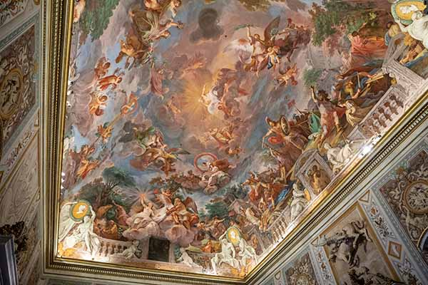
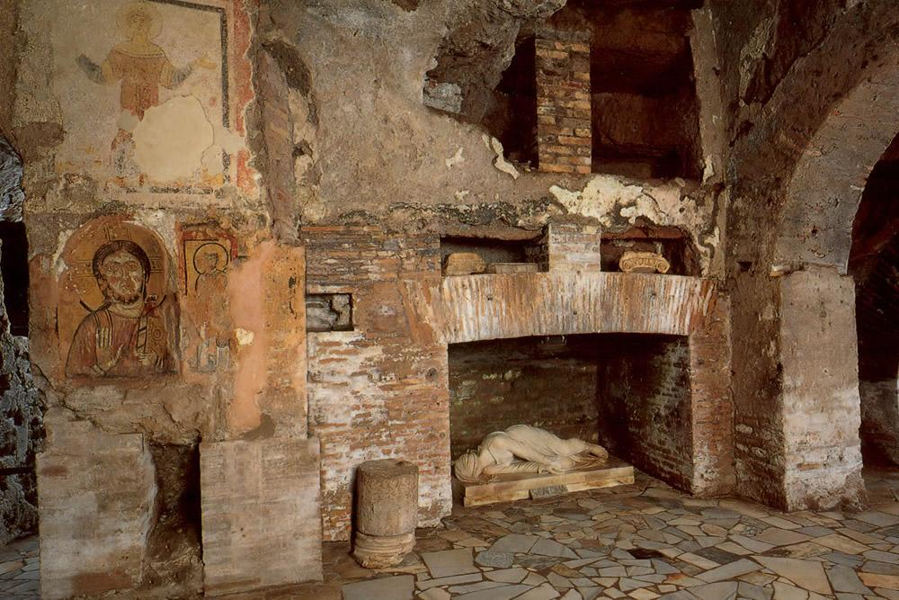
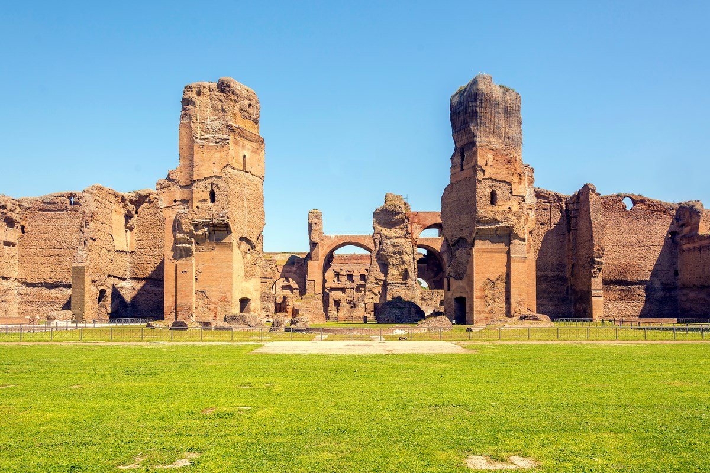

Woensdag 17 december
Ochtend
Stadswandeling
±09:00
Pantheon, Teatijns klooster, Piazza Navona, Santa Maria Maggiore.
Open in Maps
Hotel → Pantheon: 0,8 km · 10 min
Lunch
Lunch naast Teatijns klooster
±12:30
“Waar we werden betrapt door Landman”.
Ochtend → Lunch: 0,2 km · 3 min
Middag
Galleria Borghese

14:00–16:00
Open tickets
Open in Maps
Lunch → Borghese: 2,2 km · 28 min
Borghese → Hotel: 2,2 km · 28 min
Donderdag 18 december
Ochtend
Sint Pieter · Musei Vaticani · Sixtijnse Kapel

09:00
Open tickets
Open in Maps
Hotel → Musei Vaticani: 2,0 km · 25 min
Middag
Palatijn · Forum Romanum · Colosseum · San Clemente

Colosseum 14:45
Open tickets
Open in Maps
Lunch → Colosseum: 0,4 km · 5 min
Colosseum → Hotel: 2,5 km · 32 min
Zaterdag 20 december
Ochtend
Catacomben van Sint Calixtus

10:00 · Rondleiding
OV vanaf Residenza Ave Roma:
• Loop ± 1,1 km naar Ara Coeli / Piazza Venezia.
• Neem bus 118 richting “Appia / Villa dei Quintili”.
• Uitstappen bij “Catacombe S. Callisto”.
Reistijd ca. 35–40 min.
Open in Maps
Lunch
McDonald's (richting centrum)
±13:00
Waarschijnlijk weer richting centrum.
Catacomben → Lunch: ± 5,5 km · 70 min (OV aan te raden)
Middag
Galleria Doria Pamphilj

15:00
Open tickets
Open in Maps
Lunch → Doria Pamphilj: 1,0 km · 13 min
Doria → Hotel: 0,8 km · 10 min
Zondag 21 december
Ochtend
Thermen van Caracalla · Castel Sant'Angelo · Palazzo Colonna

±10:00
Combinatie-ochtend; exacte volgorde bepalen jullie ter plekke.
Open in Maps
Hotel → eerste bestemming: 3,0 km · 35 min
Lunch
Nog te kiezen
±13:00
Open lunch – ter plekke bepalen.
Middag
Naar luchthaven Fiumicino
Vlucht FCO → AMS: 20:25
Taxi: 40–50 min · OV: 60–75 min vanaf hotel.
Open in Maps
Diner
Aan boord / op luchthaven
±19:00
Praktisch: eten op de luchthaven of in het vliegtuig.